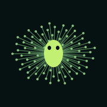

Sixteen full-brain flies. Generations of local evolution.
Version 0.1.1-1 · rootless iOS 16 · about 75 MB download, 206 MB installed.
Installs separately alongside Mote and Mote Atlas. Training runs in the foreground.
Experimental genetic optimization of an authored model. No within-lifetime learning, recovered memories or claim of a biologically faithful fly. Training scores and unfamiliar-map results are shown separately. In the initial Mac experiment, population food collection increased, but sensory-guided learning was not established. Physical XR acceptance is pending.